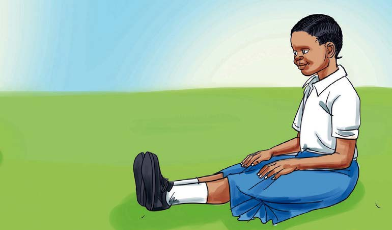

How to stretch with bended legs
1. Sit down.
2. Bend your legs tightly.
3. Rise slightly.
4. Hold your legs.
How to stretch while sitting
1. Sit down.
2. Extend your legs.
3. Bend your knees.
4. Slowly move your hands to touch your toes.
5. Repeat this process several times.
